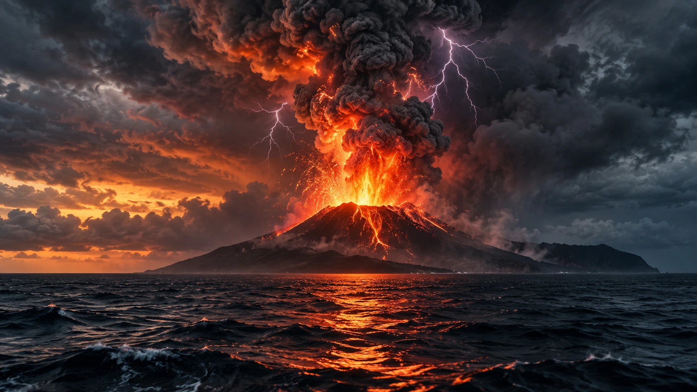

|
Website RapaTake it easy, dont make yourself tired
|
|
|---|---|
| Beranda Tentang Saya Sekolahku Syair Lagu | |
Pembelajaran Jarak JauhSenin, 07 September 2026Sehubungan dengan terjadinya erupsi Anak Gunung Krakatau yang mengakibatkan penyebaran abu vulkanik ke sejumlah wilayah, pembelajaran selama tiga hari ke depan dilaksanakan secara jarak jauh (PJJ). Kebijakan ini diterapkan sebagai langkah antisipasi untuk melindungi kesehatan dan keselamatan seluruh warga sekolah. Erupsi Anak Gunung Krakatau dapat mengeluarkan material vulkanik berupa abu halus ke atmosfer. Abu tersebut dapat terbawa angin hingga ke wilayah yang cukup jauh dan berpotensi mengganggu pernapasan, menyebabkan iritasi pada mata dan kulit, serta mengurangi jarak pandang. Tingkat penyebarannya dapat berbeda-beda, bergantung pada arah dan kecepatan angin.  Ilustrasi Erupsi Anak Gunung Krakatau Selama pelaksanaan PJJ, murid tetap mengikuti kegiatan pembelajaran sesuai dengan jadwal yang telah ditetapkan. Murid diharapkan selalu memantau informasi dan arahan yang disampaikan oleh guru melalui media komunikasi kelas masing-masing. Kegiatan pembelajaran dapat dilaksanakan melalui Zoom, LMS, WhatsApp, Telegram, atau media lain yang ditentukan oleh guru sesuai dengan kebutuhan pembelajaran. Seluruh murid diharapkan mengikuti pembelajaran dengan tertib, mengerjakan tugas yang diberikan, serta segera menghubungi guru apabila mengalami kendala selama mengikuti PJJ. Selama abu vulkanik masih terdeteksi, murid disarankan untuk mengurangi aktivitas di luar rumah, menutup pintu dan jendela, serta memakai masker dan pelindung mata apabila harus bepergian. Masyarakat juga diimbau untuk tetap tenang dan mengikuti informasi resmi dari pemerintah, sekolah, serta instansi terkait mengenai perkembangan aktivitas Anak Gunung Krakatau. |
Tautan eksternal |
| © Copyright Rafa M. Irawan, 2026. | |